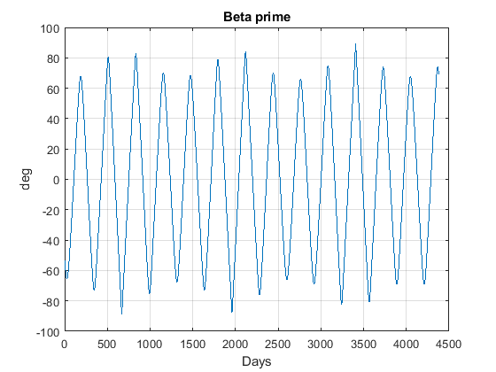

Contents
proficiency check
we = 7.292115e-5;
JD1 = 2500000;
D = @(JD) JD - 2451545.0;
theta1 = 18.697374458 + 24.06570982 * D(JD1);
JD2 = JD1 + 1;
theta2 = 18.697374458 + 24.06570982 * D(JD2);
dtheta = theta2 - theta1;
dtheta_deg = dtheta * 15;
we_deg = we * 60 * 60 * 24 * 180/pi;
sprintf('Proficiency check: accurate to %.9g', dtheta_deg - we_deg)
sprintf('Confirmed Earth rotation rate is %.9g rad/s', we)
ans =
'Proficiency check: accurate to 4.22746874e-05'
ans =
'Confirmed Earth rotation rate is 7.292115e-05 rad/s'
problem 1
mu=3.986004415e14;
ae=6378136.3;
we=7.292115e-5;
g=9.81;
J2=1.082e-3;
ws=1.99096871e-7;
missions = {'Lageos', 'Topex', 'GRACE', 'ERS-1'};
for i = 1:numel(missions)
mission = missions{i};
if isequal(mission,'Topex')
a=7705;
e=0.0010;
I=65.99;
end
if isequal(mission,'GRACE')
a=6820;
e=0.0016;
I=89.02;
end
if isequal(mission,'ERS-1')
a=7156;
e=0.0010;
I=98.6;
end
if isequal(mission,'Lageos')
a=12271;
e=0.0040;
I=109.83;
end
a=a*1000;
nb=sqrt(mu/a^3);
dOb=-3/2*nb*(ae/a)^2*J2*cosd(I)/(1-e^2)^(1/2);
dwb=-3/4*nb*(ae/a)^2*J2*(1-5*cosd(I)^2)/(1-e^2)^2;
dMb=nb*(1-3/4*(ae/a)^2*J2*(1-3*cosd(I)^2)/(1-e^2)^(3/2));
dub=dwb+dMb;
Tp=2*pi/nb;
Ta=2*pi/dMb;
Tn=2*pi/dub;
TD=2*pi/(we+dOb);
TS=2*pi/(ws+dOb);
sprintf('Mission: %s', mission)
sprintf('Keplerian period = %.5g', Tp)
sprintf('Anomalistic period = %.5g', Ta)
sprintf('Draconitic period = %.5g', Tn)
sprintf('Nodal day = %.5g', TD)
sprintf('Sun cycle = %.5g', TS)
end
ans =
'Mission: Lageos'
ans =
'Keplerian period = 13528'
ans =
'Anomalistic period = 13530'
ans =
'Draconitic period = 13531'
ans =
'Nodal day = 86083'
ans =
'Sun cycle = 2.3429e+07'
ans =
'Mission: Topex'
ans =
'Keplerian period = 6730.9'
ans =
'Anomalistic period = 6732.7'
ans =
'Draconitic period = 6733.4'
ans =
'Nodal day = 86666'
ans =
'Sun cycle = -2.8134e+07'
ans =
'Mission: GRACE'
ans =
'Keplerian period = 5605.2'
ans =
'Anomalistic period = 5609.1'
ans =
'Draconitic period = 5613.1'
ans =
'Nodal day = 86196'
ans =
'Sun cycle = 3.6555e+07'
ans =
'Mission: ERS-1'
ans =
'Keplerian period = 6024.4'
ans =
'Anomalistic period = 6028.1'
ans =
'Draconitic period = 6031.5'
ans =
'Nodal day = 85927'
ans =
'Sun cycle = 1.5701e+07'
PROB 3
clear
clc
mu=3.986004415e14;
ae=6378136.3;
we=7.292115e-5;
g=9.81;
J2=1.082e-3;
ws=2*pi/365.2422/24/60/60;
alt=350000;
a=alt+ae;
e=0;
I=35;
Long=+5.157;
n=sqrt(mu/a^3);
sprintf('O precession:')
Odot = -(3/2)*n*(ae/a)^2*J2*(1/(1-e^2)^(1/2))*cosd(I)
sprintf('O precession for day:')
Odotday = Odot*3600*24
sprintf('Sun Precession for day:')
wsd = ws*3600*24
sprintf('Sun cycle period days:')
Cs = 2*pi/(Odotday-wsd)
sprintf('Clock time to decimal:')
tc = 20+43/60+47/3600
sprintf('Local time at crossing TRMM:')
LMTT = tc+(Long/15)
sprintf('Local time Resurs')
LMTR = 22+20/60
sprintf('Difference time between LMTT and LMTR:')
time_diff = (LMTT-LMTR)
sprintf('Initial difference in time:')
O_diff_change_day= 24/Cs
sprintf('Days since last cross: ')
Offset = time_diff/(O_diff_change_day)
sprintf('Amount of crosses in 1 year:')
k=0:round(abs(365.2425/Cs))-1
sprintf('offset by initial cross beforehand and set to cycle every Solar cycle:')
Jk=round(21-Offset)+fix(k*abs(Cs))
ans =
'O precession:'
Odot =
-1.366808860265681e-06
ans =
'O precession for day:'
Odotday =
-0.118092285526955
ans =
'Sun Precession for day:'
wsd =
0.017202791208627
ans =
'Sun cycle period days:'
Cs =
-46.440605665639453
ans =
'Clock time to decimal:'
tc =
20.729722222222222
ans =
'Local time at crossing TRMM:'
LMTT =
21.073522222222223
ans =
'Local time Resurs'
LMTR =
22.333333333333332
ans =
'Difference time between LMTT and LMTR:'
time_diff =
-1.259811111111109
ans =
'Initial difference in time:'
O_diff_change_day =
-0.516789125723163
ans =
'Days since last cross: '
Offset =
2.437766292679254
ans =
'Amount of crosses in 1 year:'
k =
0 1 2 3 4 5 6 7
ans =
'offset by initial cross beforehand and set to cycle every Solar cycle:'
Jk =
19 65 111 158 204 251 297 344
prob 4
h = 500e3;
a0 = ae + h;
e0 = 0;
I0 = 89 * pi/180;
w0 = 0;
long0 = 0;
M0 = 0;
t0 = 'May 22, 2018';
abcorr = 'NONE';
et_t0 = cspice_str2et( t0 );
target = 'Sun';
frame = 'J2000';
observer = 'Earth';
abcorr = 'NONE';
nb = @(a) sqrt(mu/a^3);
dlongb = @(a, e, I) -3/2*nb(a)*(ae/a)^2*J2*cos(I)/(1-e^2)^(1/2);
dwb = @(a, e, I) -3/4*nb(a)*(ae/a)^2*J2*(1-5*cos(I)^2)/(1-e^2)^2;
dMb = @(a, e, I) nb(a)*(1-3/4*(ae/a)^2*J2*(1-3*cos(I)^2)/(1-e^2)^(3/2));
dub = @(dwb, dMb) dwb+dMb;
for k = 1 : 1 : 12*365
dt = k * 60 * 60 * 24;
w(k,:) = w0 + dwb(a0, e0, I0) * dt;
long(k,:) = long0 + dlongb(a0, e0, I0) * dt;
M(k,:) = M0 + dMb(a0, e0, I0) * dt;
rv = oe2rv([a0, e0, I0, w(k,:), long(k,:), M(k,:)]);
h = cross(rv(1:3), rv(4:6));
h = h / norm(h);
et = et_t0 + dt;
X_Esun = spice_state(et, target, frame, abcorr, observer);
X_Esun = X_Esun';
r_sun = X_Esun(1:3);
r_sun = r_sun / norm(r_sun);
sun_proj = dot(h, r_sun);
b_prime(k,:) = 90 - acosd(sun_proj);
end
fname = 'beta prime';
figure('name', fname);
plot(b_prime);
xlabel('Days')
ylabel('deg')
title('Beta prime')
sprintf('a. Q: Is the variation of the beta prime angle periodic?')
sprintf('a. A: Yes')
sprintf('b. Q: Is the variation of the beta prime angle sinusoidal?')
sprintf('b. A: Yes')
sprintf('c. Q: Why doesn’t beta prime angle in each cycle reach the same maximum value?')
sprintf('c. A: Because of orbital precession and other perturbing forces (like J2).')
subfunctions
function rv = spice_state(epoch, target, frame, abcorr, observer)
rv = zeros(length(epoch), 6);
for i = 1:length(epoch)
starg = mice_spkezr( target, epoch(i), frame, abcorr, observer);
rv(i,:) = starg.state(1:6);
end
end
ans =
'a. Q: Is the variation of the beta prime angle periodic?'
ans =
'a. A: Yes'
ans =
'b. Q: Is the variation of the beta prime angle sinusoidal?'
ans =
'b. A: Yes'
ans =
'c. Q: Why doesn’t beta prime angle in each cycle reach the same maximum value?'
ans =
'c. A: Because of orbital precession and other perturbing forces (like J2).'
